Material baseado nas aulas de 16/04/2019, 23/04/19 (contribuição angular para determinação exata do zero do PI), 12/09/2019
Material teórico destas aulas:
Planta adotada como estudo de caso: \[ C(s)=\dfrac{1}{(s+1)(s+2)(s+10)}\]
Note que é um sistema do tipo 0 (sem integrador).
Fechando a malha apenas com controlador proporcional teremos:
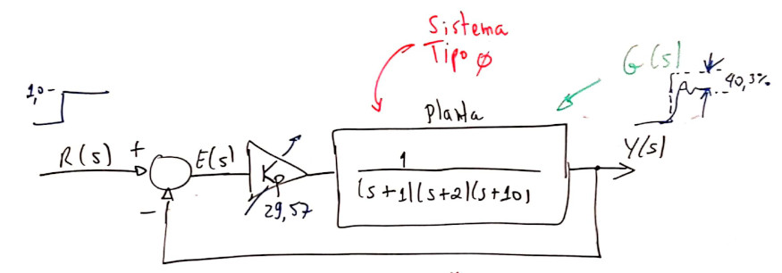
Detalhes deste controlador:
Note que o RL deste controlador era:
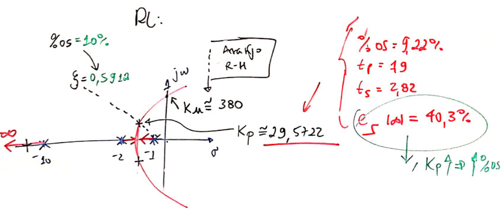
A figura anterior também resume alguns resultados obtidos, usando o RL.
A próxima figura mostra a resposta ao degrau:
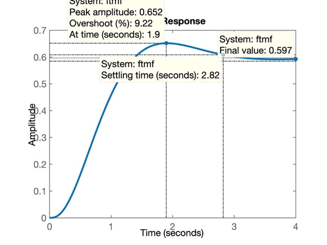
Lembrando que \(\%OS<10\%\) (o que resulta no \(\zeta=0,5912\)):
>> OS=10;
>> zeta = (-log(OS/100))/(sqrt(pi^2 + (log(OS/100)^2)))
zeta = 0.5912
>>Usando o MATLAB para calcular o erro:
>> dcgain(ftmf)
ans = 0.5965
>> erro=(1-dcgain(ftmf))/1*100
erro = 40.3470
>>Obs.: O que faz a função dcgain()?
Esta função faz o MATLAB realizar a segiunte operação: \(y(\infty)=\lim_{s \to 0} \left[ R(s) \cdot FTMF(s) \right]\) O cálculo deste limite segue as propriedades da transformada de Laplace em relação ao cálculo do valor final (temporal) de uma função. \(R(s)\) corresponde a transformada de Laplace da referência introduzida no sistema de malha fechada (\(FTMF(s)\)). No caso da função
dcgain(), \(R(s)=\frac{1}{s}\) que corresponde à entrada degrau (amplitude unitária) Desta forma, usardcgain(FTMF)nos permite determinar facilmente \(y(\infty)\) para entradas degrau.
Como é a planta é um sistema tipo 0, um simples controlador proporcional não permite anular o erro em regime permanente. A teoria do erro nos diz que é necessário acrescentar no mínimo um integrador na função transferência do sistema, de forma a zerar o erro em regime permanente (e apenas para entrada degrau).
A transformada de Laplace para ação integral é simplesmente: \(\dfrac{1}{s}\).
Fechando a malha com este controlador teremos:
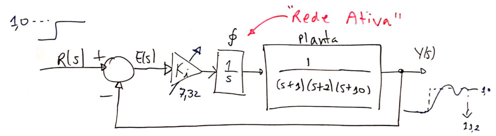
Detalhes sobre este controlador:

Entrando com dados deste controlador no MATLAB:
>> C_I=tf(1,[1 0]); % ingressando função de transferência do controlador
>> zpk(C_I) % verificando...
ans =
1
-
s
Continuous-time zero/pole/gain model.
>> ftma_I=C_I*G; % calculando a FTMA(s)
>> zpk(ftma_I) % verificando pólos e zeros...
ans =
1
--------------------
s (s+10) (s+2) (s+1)
Continuous-time zero/pole/gain model.
>>RL deste controlador:
>> figure; % força Matlab a abrir outra janela grafica (Figure)
>> rlocus(ftma_I) % RL da FTMA(s) com este controlador
>> hold on; % forçando novos gráficos superpostos na Figure atual
>> sgrid(zeta,0) % plotando linha guia com mesmo zeta (igual %OS=10%)
>> [ K_I, polosMF ] = rlocfind(ftma_I) % Encontrando o ganho adequado
Select a point in the graphics window
selected_point = -0.3367 + 0.4794i
K_I = 8.0293
polosMF =
-9.9888 + 0.0000i
-2.3358 + 0.0000i
-0.3377 + 0.4797i
-0.3377 - 0.4797i
>> % grafico salvo como: step_integrador_puro.jpg
>> % Resultados gráficos:

ou
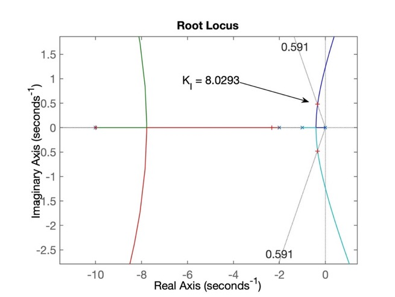
A resposta ao degrau para este controlador pode ser encontrada via:
>> figure; step(ftmf_I)que gera a figura:

O problema deste controlador é que apesar de termos zerado o erro em regime permanete (note pelo gráfico anterior, que \(y(\infty)=1\), igual à amplitude da referência, degrau unitário aplicado na entrada do sistema), a resposta ficou muito lenta (\(t_s=10,6\) segundos; o controlador proporcional obteve \(t_s=2,82\) segundos).
O MATLAB pode ser usado para comparar diretamente o desempenho destes últimos 2 controladores, deixando mais evidente os resultados obtidos através de cada um dos mesmos:
>> figure; step(ftmf, ftmf_I)
>> legend('Proporcional', 'Integrador Puro')O que gera a figura:

Soluções (para baixar \(t_s\) e ainda manter \(e_{degrau}(\infty)=0\)) ? - "paralelizar" com a ação integral (pura), com a ação proporcional.
O controlador PI é então o resultado da ação Proporcional atuando em paralelo com a ação Integral. O diagrama em blocos fica:

Detalhes deste controlador:

Note que: \(\dfrac{Ki}{Kp}=\)
>> K_I % verificando valor de Ki
K_I = 8.0293
>> Kp % verificando valor de Kp
Kp = 29.5700
>> K_I/Kp % calculando posição do zero do PI...
ans = 0.2715
>>Mas rapidamente vamos descobrir que esta posição para o zero do controlador PI pode não ser a "ideal"...
Ingressando com dados deste controlador no MATLAB:
>> C_PI1=tf(Kp*[1 K_I/Kp], [1 0]) % versão 1 do PI...
C_PI1 =
29.57 s + 8.029
---------------
s
Continuous-time transfer function.
>> zpk(C_PI1) % colocando expressão num formato mais conveniente
ans =
29.57 (s+0.2715)
----------------
s
Continuous-time zero/pole/gain model.
>> % fechando a malha...
>> ftma_PI1=C_PI1*G;
>> zpk(ftma_PI1) % verificando pólos e zeros da nova FTMA(s)
ans =
29.57 (s+0.2715)
--------------------
s (s+10) (s+2) (s+1)
Continuous-time zero/pole/gain model.
>> ftmf_PI1=feedback(ftma_PI1, 1); % note que C_PI1 já incorpora o ganho do controlador
>> % se quero saber onde estão polos de MF:
>> pole(ftmf_PI1)
ans =
-10.3674 + 0.0000i
-1.2254 + 1.6612i
-1.2254 - 1.6612i
-0.1818 + 0.0000i
>> % Se quero verificar o RL para este controlador, tenho que "eliminar" o ganho incorporado antes em PI1(s):
>> C_PI1a=tf([1 K_I/Kp],[1 0])
C_PI1a =
s + 0.2715
----------
s
Continuous-time transfer function.
>> ftma_C_PI1a=C_PI1a*G;RL deste controlador (resumo):
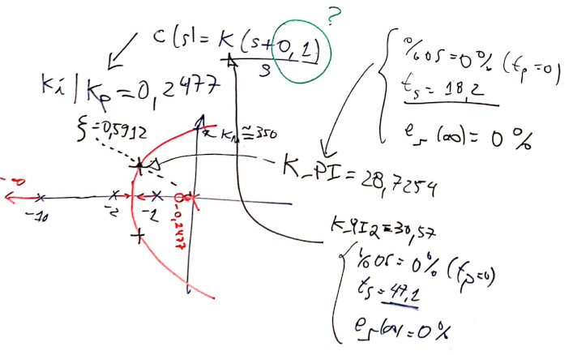
ou:
>> figure; rlocus(C_PI1a) % mostra RL para esta versão do PI
>> hold on; sgrid(zeta,0) % sobrepondo linha guia para zeta = cte
>> axis([-11 1 -4 4]) % forçando um "zoom" na região de interesse
>> pole(ftmf_PI1) % pólos de MF do controlador PI sintonizado:
ans =
-10.3674 + 0.0000i
-1.2254 + 1.6612i
-1.2254 - 1.6612i
-0.1818 + 0.0000i
>> % Podemos sobrepor estes pólos de MF no gráfico do RL anterior:
>> plot(pole(ftmf_PI1),'r+', 'MarkerSize',10, 'LineWidth',3)O que nos permite obter a figura:

Note 3 pólos de MF (ressaltados na figura com o marcador + em vermelho (r=red)) muito próximos da origem do plano-s. São os pólos dominantes. Notem que os 3 estão próximos: 2 pólos conjugados complexos que caracterizam a traducional resposta sub-amortecida de um sistema (puro) de 2a-ordem + um pólo real mais próximo da origem do plano-s.
E para comparar a resposta temporal à entrada degrau com os controladores anterior podemos fazer:
>> figure; step(ftmf, ftmf_I, ftmf_PI1)
>> legend('Proporcional', 'Integrador Puro', 'PI')Que gera o gráfico:
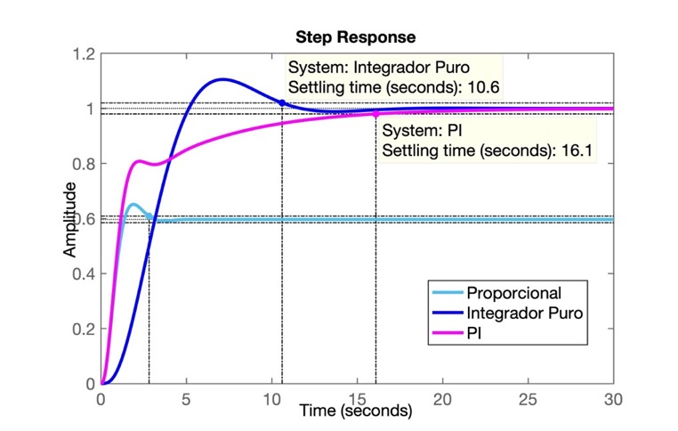
Note que esta versão do PI responde MAIS lentamente que o próprio integrador puro. Como "corrigir" este problema?
Problema -- Onde alocar o zero deste controlador?
Solução: raciocinando como fica o RL e usando contribuição angular para definir o ponto exato para o zero do PI.
Lembrando que: Um sistema em MF de 2a-ordem no modelo:
\(G(s)=\dfrac{\omega_n^2}{s^2+2\zeta\omega_n\;s+\omega_n^2}=\dfrac{b}{s^2+as+b}\)
Este sistema terá pólos de MF localizados em: \(s=\sigma\pm j\omega_d\), ou
\(s=\zeta\;\omega_n\;\pm\;j\;\omega_n\;\sqrt{1-\zeta^2}\).
Ou graficamente:
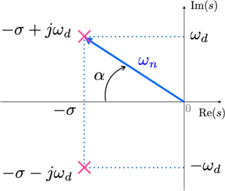
onde:
\(\sigma = \omega_n \cos{(\alpha)}=\omega_n \zeta \quad \textsf{,}\)
\(\omega_d = \omega_n \sin{(\alpha)}=\omega_n \sqrt{1-\zeta^2} \quad \textsf{,}\)
\(\zeta = \cos{(\alpha)} \quad \textsf{e}\)
\(\sin{(\alpha)} = \sqrt{1-\zeta^2}.\)
Note que já temos \(\zeta\), mas não temos \(\omega_n\). Mas \(\omega_n\) pode ser definido se estipularmos um valor desejado para o tempo de tipo, ou tempo de subida ou para o tempo de assentamento.
Para isto também necessitamos definir algum valor desejado para o tempo de resposta. Supondo que queiramos que o sistema entre em regime permanente em menos de 2 segundos (\(t_s<2,0\)), temos:
Quando \(0<\zeta<1\):
\(t_s=\dfrac{4}{\zeta \cdot \omega_n} \qquad\)(1)
\(t_p=\dfrac{\pi}{\omega_n\sqrt{1-\zeta^2}} \qquad\) (2)
\(t_r=\dfrac{0,6+2,16\zeta}{\omega_n} \qquad\)(3)
No nosso caso (\(\zeta=0,5912 \leftarrow \%OS=10\%\); \(t_{s_{d}}=2\)), e trabalhando com (1), obtemos:
\(\omega_n=\dfrac{4}{\zeta \cdot t_s}=3,3832\).
sabemos ainda que: \(\omega_d=\omega_n \sqrt{1-\zeta^2}\), então \(\omega_d=2,7288\).
E assim: os pólos de MF dominantes e desejados, devem ficar em \(s=2,0\pm j2,7288\).
Assim, teremos:

O cálculo dos ângulos fica:
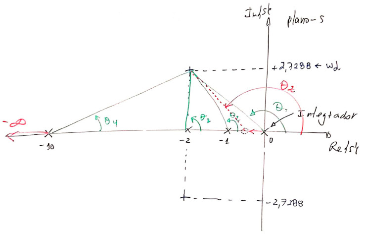
Obs.: Lembrar que o `MATLAB' não trabalha com ângulos em graus e sim em radianos.
Continuando:
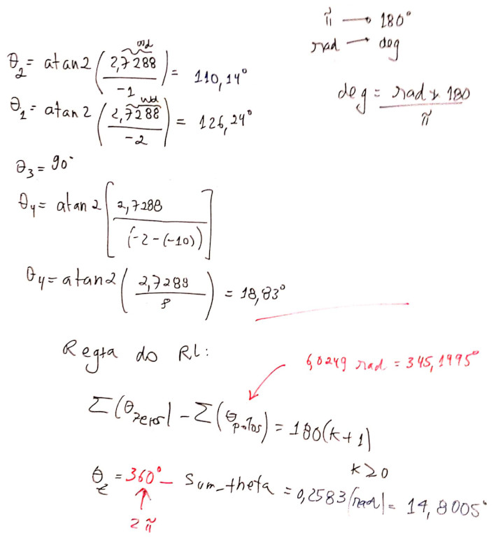
O que graficamente significa:

ou seja, a equação final do PI fica:
\[ C(s)=K_i \cdot \dfrac{(s-8,3275)}{s} \]
sobrepondo-se a linha guia do \(\zeta\), usando rlocfind(.), encontramos \(K_i-21,3835\).
Problema: temos um zero instável no próprio controlador, o que torna o sistema em MF, instável. Usando os comandos feedback() e depois step() vamos confirmar a seguinte resposta:
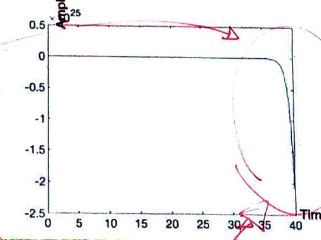
O que significa esta resposta, se o RL passou no ponto desejado?
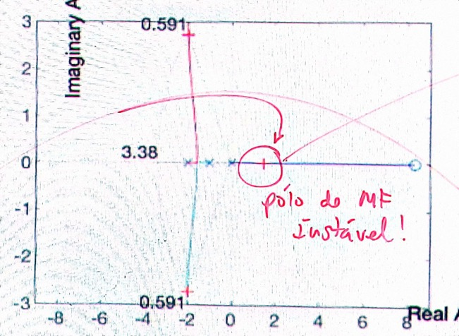
Resposta: Signfica que há forma de forçar o RL a passar no ponto desejado, mas este ponto, derivado de um \(t_s\) muito baixo não é possível de ser adotado para este sistema!
Solução: adotar um \(t_s\) maior ou "chutar" uma outra posição para o zero do PI.
Normalmente o zero do PI fica localizado próximo do pólo do próprio controlador, ou seja, muito próximo da origem.
Se para o zero do PI for adotado \(s=-0,1\) o RL fica:
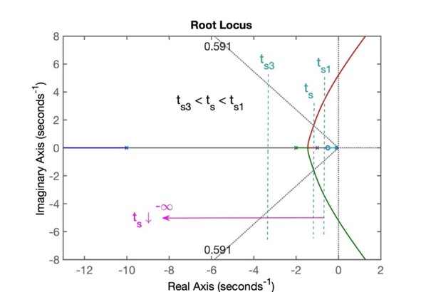
e obtemos como tempo de resposta: \(t_s=3,6\).
Outras soluções? "Afastar" o pólo do PI da origem. Mas neste caso, deixamos de ter um PI e obtemos um controlador por atraso de transporte, um simplesmente "Lag".
Afastando o pólo da origem (no caso PI) obtemos um controlador Lag. Seu RL fica:

Note que tanto o pólo quanto o zero do PI se afastam da origem, mas normalmente seu zero ocorre antes do pólo mais lento da planta.
O controlador sugerido neste caso fica:
\[ C(s)=K \cdot \dfrac{(s-0,9)}{(s-0,1)} \]
Note que "paga-se" um preço pelo uso do Lag: - consegue-se reduzir o tempo de assentamento em comparação ao controlador PI, mas...; - o erro não deixa mais de ser nulo em regime permanente.
Esta solução é então adotada nos casos em que um baixo erro é permitido.
Durante a criação do diary ou durante a edição do arquivo Markdown uma forma de controlar o tamanho das figuras é incoporar diretamente código html no arquivo .md.
Por exemplo:
Antes a inclusão de figuras era feita na forma:
A idéia é substituir esta linha por:
<img src="figura.jpg" alt="figura" width="500"/>ou (mais explicitamente):
<img src="figura.jpg" width="200" height="200" />mas normalemten apenas o atributo width já permite escalonar a figura de forma conveniente.
Note que o atributo alt é opcional (não necessário).
Atualizado em 13/09/2019.